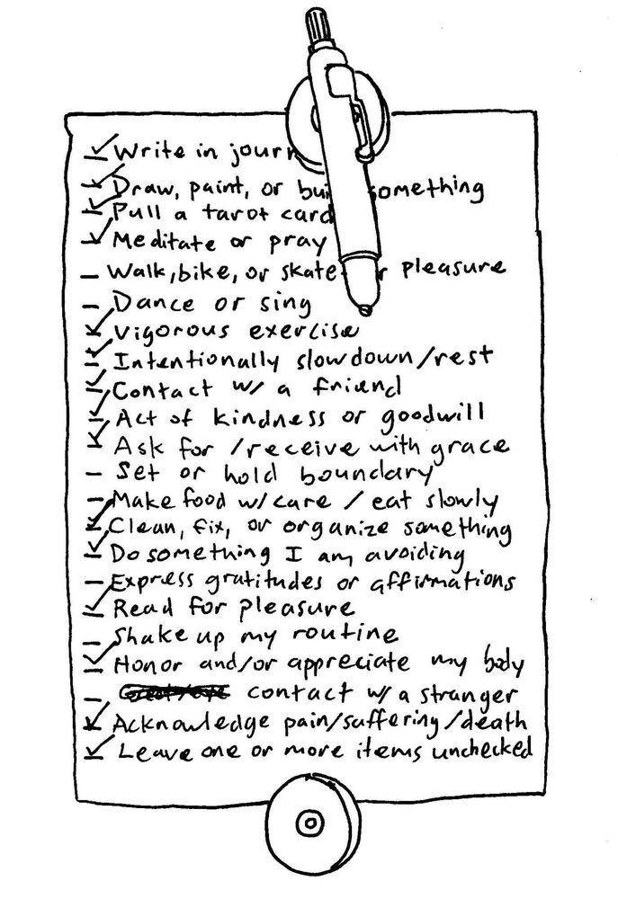

Checking the Box
A not-too woo-woo guide to unblocking your creativity using a simple checklist.
Guidelines for making a simple tool to help you get unstuck and establish a creative habit with whatever you have available today.
I spent about a decade in a creative block. This zine is about how I got out of it, illustrated with my own drawings. It's free, and you're welcome to share it with whomever.
Download the zine (PDF, about 4 MB)
An easier-to-read web version is on the way. Checking the Box © 2024 Jonathan E Scarboro, licensed CC BY-NC 4.0. It's not psychotherapy or medical advice.
